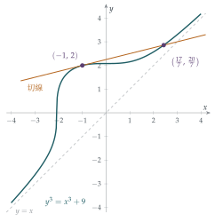

STEP I 2009，第 2 題
繼續之前，請先閱讀題目（原題為英文）。題目載於 STEP Support Programme 的題目資料庫： step.maths.org/questions/09-s1-q2
引子
這題看來只是一道例行的坐標幾何（coordinate geometry）題：求導、找切線、解三次方程。可是最後一行卻要你找出一個立方數，它是另外三個立方數之和，而幾何竟像變魔術一樣把它變了出來。
這個竅門是過曲線上一個已知點作直線，從而找出新的點，它可追溯至公元三世紀亞歷山大港的丟番圖（Diophantus）。到了現代數學家手上，它發展成橢圓曲線（elliptic curves）的理論。這套理論位於當今數論的核心，是費馬最後定理（Fermat’s Last Theorem）證明的基礎，也保障着全球一大部分互聯網通訊的安全。
動筆之前
點 \((-a, b)\) 在曲線上。為甚麼？這跟立方和又有甚麼關係？
代入：\((-a)^3 + a^3 + b^3 = b^3\)，所以確實在曲線上。在 \(y^3 = x^3 + a^3 + b^3\) 上坐標為有理數（rational）的點正是我們想要的：若 \(x = q/s'\) 而 \(y = p/s'\)，去分母後便得到一條立方數之間的關係式。我們的計劃是從一個容易找到的點出發，利用幾何找出一個沒那麼明顯的點。
逐步解題
階段 1 切線
對 \(y^3 = x^3 + a^3 + b^3\) 作隱函數求導（implicit differentiation）：\(3y^2 \dfrac{dy}{dx} = 3x^2\)，所以 \(\dfrac{dy}{dx} = \dfrac{x^2}{y^2}\)。在 \((-a, b)\) 處斜率（gradient）為 \(a^2/b^2\)，所以切線（tangent）是 \[y - b = \frac{a^2}{b^2}(x + a) \quad\Longrightarrow\quad b^2 y - b^3 = a^2 x + a^3 \quad\Longrightarrow\quad b^2 y - a^2 x = a^3 + b^3. \qed\]
階段 2 切線與曲線再次相交之處
取 \(a = 1\)、\(b = 2\)，曲線是 \(y^3 = x^3 + 9\)，而在 \((-1, 2)\) 的切線是 \(4y - x = 9\)，即 \(y = \dfrac{x + 9}{4}\)。代入曲線方程： \[\frac{(x+9)^3}{64} = x^3 + 9 \quad\Longrightarrow\quad x^3 + 27x^2 + 243x + 729 = 64x^3 + 576,\] 整理後得 \(63x^3 - 27x^2 - 243x - 153 = 0\)，再除以 \(9\) 便得 \(7x^3 - 3x^2 - 27x - 17 = 0\)。■
階段 3 解三次方程
不用做任何代數運算，你已經知道這個三次方程的一個根。是哪一個？它為甚麼應該出現兩次？
切線在 \(x = -1\) 處與曲線相切（圖 1.9.1），而「相切」意味着重根（repeated root），正如拋物線的切線與拋物線相交於某個二次方程的二重根。所以 \((x + 1)^2\) 應該是一個因式。驗算：\(7(-1)^3 - 3(1) - 27(-1) - 17 = -7 - 3 + 27 - 17 = 0\)，而導數 \(21x^2 - 6x - 27\) 在 \(x = -1\) 處也等於零。相除後得 \[7x^3 - 3x^2 - 27x - 17 = (x+1)^2 (7x - 17).\]
所以切線與曲線再次相交於 \(x = \frac{17}{7}\) 之處。求出 \(y\)，然後把這個點化為一條立方數之間的關係式。
\(y = \dfrac{17/7 + 9}{4} = \dfrac{80/7}{4} = \dfrac{20}{7}\)。點 \(\bigl(\frac{17}{7}, \frac{20}{7}\bigr)\) 在 \(y^3 = x^3 + 9\) 上，所以 \[\frac{20^3}{7^3} = \frac{17^3}{7^3} + 9 \quad\Longrightarrow\quad 20^3 = 17^3 + 9 \times 7^3.\]
我們希望 \(9 \times 7^3\) 是兩個立方數之和。回想一下那個 \(9\) 是怎樣來的。
\(9 = a^3 + b^3 = 1^3 + 2^3\)，所以 \(9 \times 7^3 = 7^3 + 14^3\)。因此 \[20^3 = 17^3 + 14^3 + 7^3.\] 驗算：\(8000 = 4913 + 2744 + 343\)。■

回顧
相切即二重根。這令一個沒有明顯根的三次方程，變成可以即時因式分解的方程。
新的根自動是有理數。三個根之中一旦有兩個是有理數（這裏兩個都是 \(-1\)），第三個也必定是有理數，因為各根之和 \(\frac{3}{7}\) 是有理數。這正是整個方法的精髓。
幾何帶來了算術。我們從沒有刻意搜尋立方數；是一條切線把它們找了出來。
背後的數學
取一條三次曲線（cubic curve），例如 \(y^3 = x^3 + 9\)，或者更標準的形式 \(y^2 = x^3 + Ax + B\)。假如你知道曲線上兩個坐標為有理數的點，那麼過這兩點的直線恰好與曲線再相交於一點，而該點的坐標也是有理數（理由見回顧中的論證）。假如你只知道一個點，就改用該點的切線。無論哪種情況，舊的有理點都能產生新的有理點。
值得注意的是，這個「弦切」（chord–tangent）作圖法可以變成一種把曲線上的點相加的方法，於是有理點便構成一個羣（group），這是你在大學一年級會學到的一種代數結構。莫德爾（Louis Mordell）在 1922 年證明了這個羣由有限個點生成：所有有理點，不論有多少個，都可以由一個有限集合出發，利用弦和切線構造出來。他的證明是 第 1.5 節 中費馬（Fermat）下降法的一個版本。
今日的橢圓曲線
這類曲線稱為橢圓曲線（並非因為它們是橢圓，而是因為歷史上它們與橢圓的弧長有關）。它們在現代數學中無處不在。
費馬最後定理。在 1980 年代，Gerhard Frey 留意到 \(x^n + y^n = z^n\) 的一個解會產生一條非常古怪的橢圓曲線。懷爾斯（Andrew Wiles）在 1994 年證明了這樣古怪的曲線不可能存在，從而證明了費馬最後定理。
貝赫與斯維訥通－戴爾猜想（Birch and Swinnerton-Dyer conjecture）。有理點所構成的羣需要多少個生成元（generators）？在 1960 年代，有人憑藉劍橋一些數學史上最早的電腦實驗提出了一個猜想，它用一個函數來預測答案，而這個函數是由點算曲線在模質數之下的點數構造出來的。它是七條千禧年大獎難題（Millennium Prize Problems）之一。
密碼學（cryptography）。在有限數系上的橢圓曲線上，把一個點 \(P\) 自己相加 \(n\) 次是很快的，即使 \(n\) 有數百位數字也一樣（把 \(P\) 反覆加倍，就像你用反覆平方來計算高次冪那樣）。但已知 \(P\) 和結果 \(nP\)，要找出 \(n\) 卻似乎極之困難：這就是橢圓曲線離散對數問題（elliptic-curve discrete logarithm problem）。這種不對稱性保護着今日大部分的網上通訊。
同次冪之和
能寫成三個正立方數之和的最小立方數是 \(6^3 = 3^3 + 4^3 + 5^3\)；切線法找到的是 \(20^3 = 7^3 + 14^3 + 17^3\)，它並非前者的倍數，而重複使用這個方法會不斷產生新的恆等式（雖然有些會涉及負數）。要多少個 \(k\) 次冪才能湊成另一個 \(k\) 次冪？歐拉（Euler）在 1769 年猜想，至少需要 \(k\) 個 \(k\) 次冪才能湊成另一個 \(k\) 次冪。對於四次冪和五次冪，他錯了：1966 年 Leon Lander 和 Thomas Parkin 以電腦搜尋找到 \[27^5 + 84^5 + 110^5 + 133^5 = 144^5\] 而在 1988 年，Noam Elkies 利用橢圓曲線找到了四次冪的反例（counterexamples）。
思維技巧
要找出一個方程的整數解或有理數解，不妨把它看成一條曲線，然後尋找過已知點的直線。
背後的代數很簡單：若一個有理係數多項式（polynomial）除了一個根之外其餘的根都是有理數，那麼最後一個根也是有理數。這樣在圖像與方程之間來回轉換，是數學家所能擁有的最強大的習慣之一。
延伸練習
圓上的有理點。過 \((-1, 0)\) 而斜率為 \(t\) 的直線與圓 \(x^2 + y^2 = 1\) 再次相交。證明另一個交點是 \(\left(\dfrac{1 - t^2}{1 + t^2}, \dfrac{2t}{1 + t^2}\right)\)，並由此得出無窮多組畢氏三元數（Pythagorean triples）。
一條落空的弦。點 \((1, 2)\) 和 \((2, 1)\) 在 \(x^3 + y^3 = 9\) 上。證明過這兩點的直線與曲線再沒有其他交點。那個「第三點」到哪裏去了？（查一查無窮遠點（point at infinity）。）
故技重施。求 \(y^3 = x^3 + 9\) 在 \(\bigl(\frac{17}{7}, \frac{20}{7}\bigr)\) 的切線，以及它與曲線相交的第三點。（使用電腦代數系統會有幫助；留意數字增長得有多快。）
的士數（taxicab numbers）。\(1729 = 1^3 + 12^3 = 9^3 + 10^3\)。求過 \((1, 12)\) 和 \((9, 10)\) 的直線與曲線 \(x^3 + y^3 = 1729\) 相交的第三點，並由此推導出一條形如 \(p^3 = q^3 + r^3 + s^3\) 的新恆等式。
延伸閱讀
Joseph Silverman & John Tate, Rational Points on Elliptic Curves（Springer）。為大學本科生而寫；第 1 章所需的知識不超出英國高考（A-level）程度。
Avner Ash & Robert Gross, Elliptic Tales（Princeton University Press）。一本普及讀物，一路講到貝赫與斯維訥通－戴爾猜想。
Simon Singh, Fermat’s Last Theorem。講述橢圓曲線如何解決一個有 350 年歷史的難題。